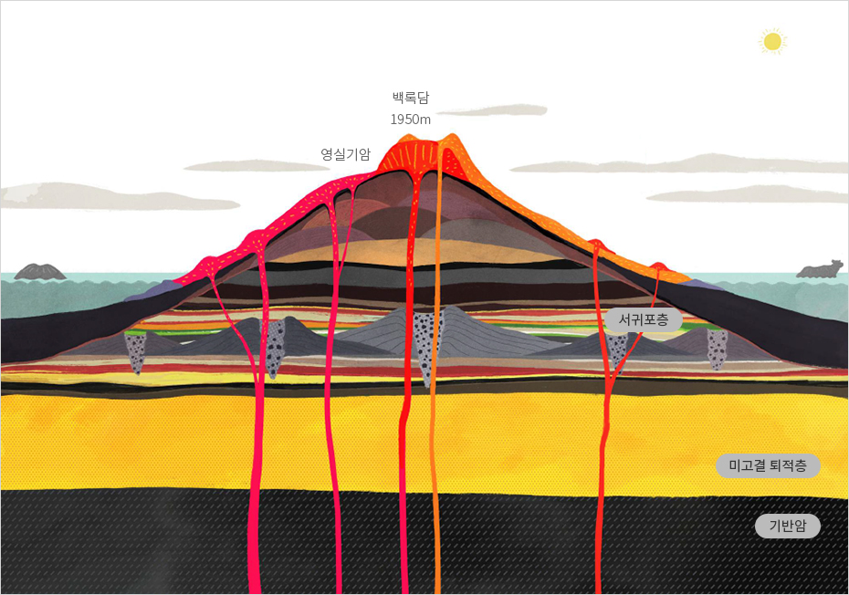
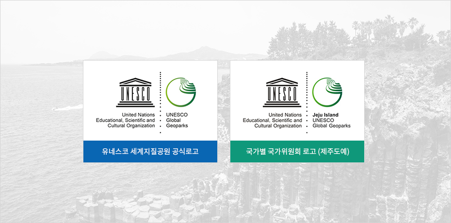
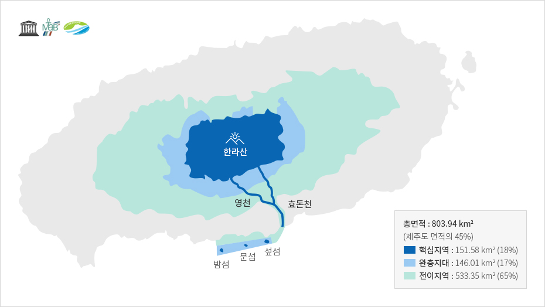

명품자연
- Home
- 일반현황
- 지리
- 명품자연
세계유일의 유네스코 3관왕
제주도는 동서로 약 73㎞, 남북으로 41㎞인 타원형 모양의 화산섬으로, 섬 중심부에 남한에서 가장 높은 산인 높이 1,950m의 한라산이 우뚝 솟아 있습니다.
화산활동으로 만들어진 제주도는 섬 전체가 '화산 박물관'이라 할 만큼 다양하고 독특한 화산 지형을 자랑합니다. 또한 땅 위에는 크고 작은 360여개 오름1)이 펼쳐져 있고, 땅 아래에는 160여 개의 용암동굴이 섬 전역에 흩어져 있는데, 작은 섬 하나에 이렇게 많은 오름과 동굴이 있는 경우는 세계적으로도 매우 드뭅니다.
※ 1) 소규모 화산제를 뜻하는 제주어



제주 세계자연유산
세계자연유산 (World Natural Heritage) - 2007.07.02 등재
유네스코는 1972년 '세계문화 및 자연유산보호협약'을 채택하고, 인류전체를 위해 보호되어야 할 문화와 자연이 특별히 뛰어난 지역을 세계유산으로 등재하기 시작하였습니다.
제주도는 2007년 우리나라 최초로 '제주 화산섬과 용암동굴'이라는 이름으로 한라산 천연보호구역, 성산일출봉, 거문오름 용암동굴계 지역이 세계자연유산에 등재되었으며 제주도 전체 면적의 약 10%를 차지합니다.
제주 세계지질공원
세계지질공원 (Global Geopark) - 2010.10.01 인증
세계지질공원은 지질학적으로 뛰어난 가치를 지닌 자연유산 지역을 보호하면서 이를 토대로 관광을 활성화하여 주민소득을 높이는 것을 목적으로 만들어진 유네스코 프로그램입니다.
제주도는 2010년 10월 유네스코 세계지질공원으로 인증되었습니다.


※ 출처 : 제주지질공원 (http://www.jeju.go.kr/geopark/index.htm)
제주 생물권보전지역
생물권보전지역 (Biosphere Reserve) - 2002.12.16 인증
생물권보전지역은 유네스코 인간과 생물권 계획(MAB)에 따라 생물다양성 보전과 자연자원의 지속가능한 이용을 결합시킨 육지 및 연안(해양생태계) 지역을 말하며, 2019년 기준 전세계 124개국 701곳이 지정되어 있습니다.
제주도는 풍부한 생물종과 독특한 생태계를 인정받아 2002년에 유네스코로부터 한라산을 중심으로 해발 200m 이상의 지역을 ‘생물권보전지역’으로 지정되었으며, 2019년 부속섬인 추자도 등을 포함한 제주도 전체가 생물권보전지역으로 확대 지정되었습니다.


※출처 : 제주세계자연유산센터 (http://www.jeju.go.kr/jejuwnh/unesco/triple.htm)